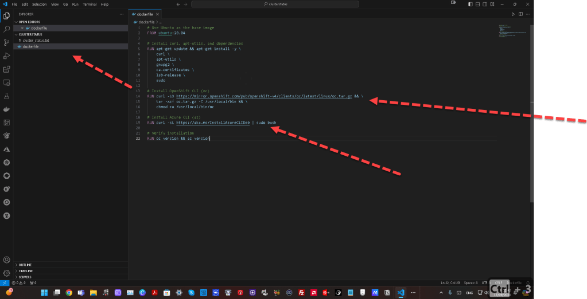
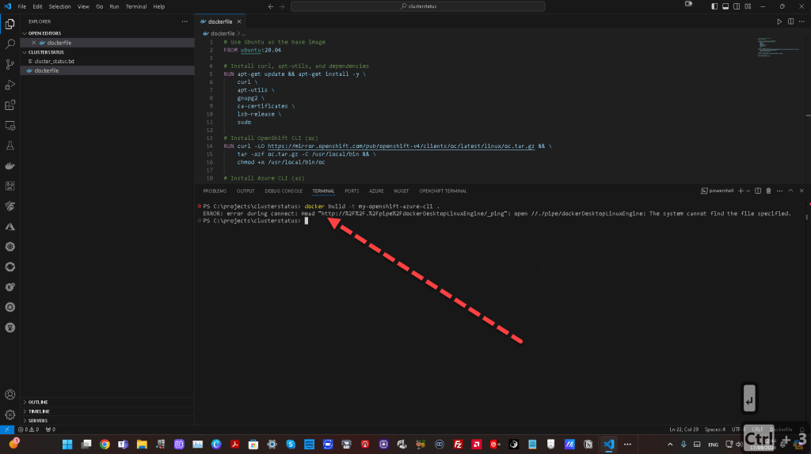
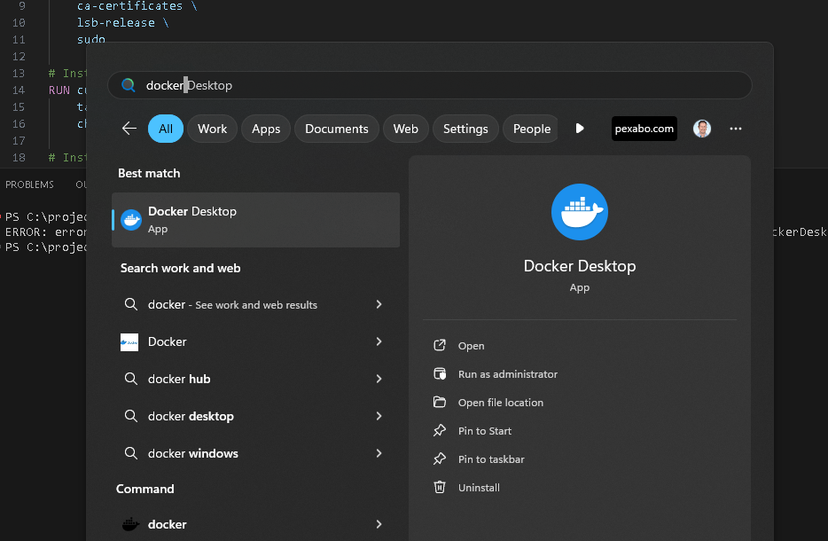
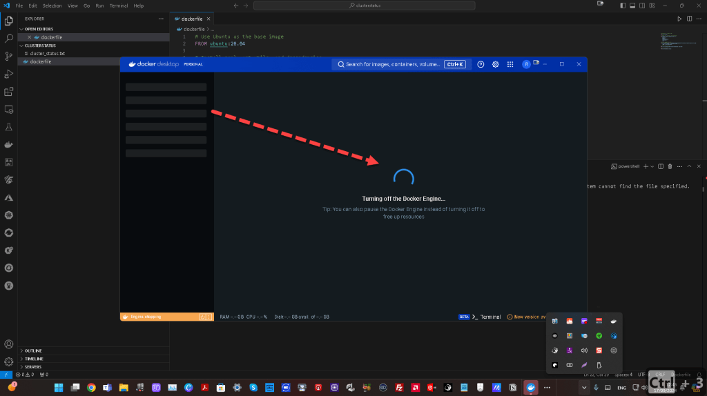
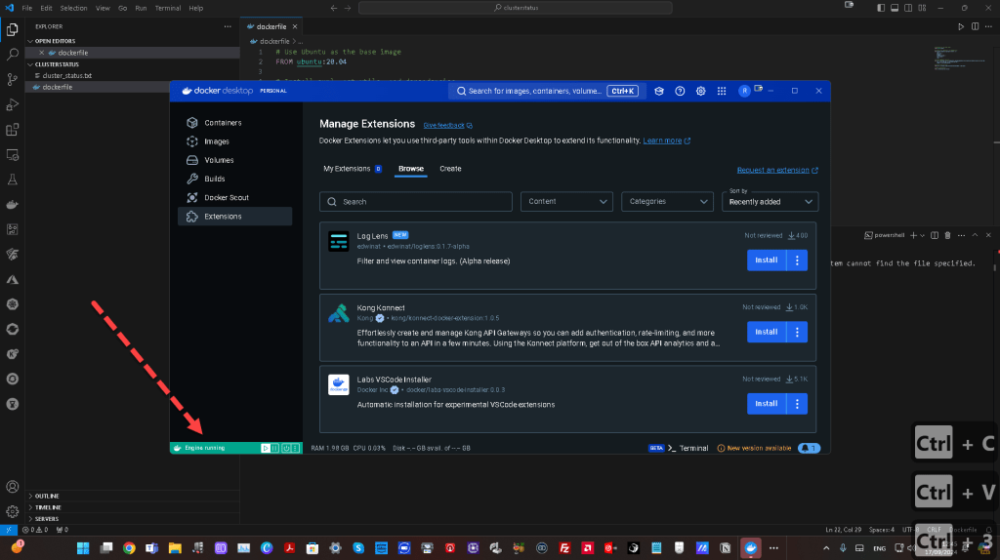
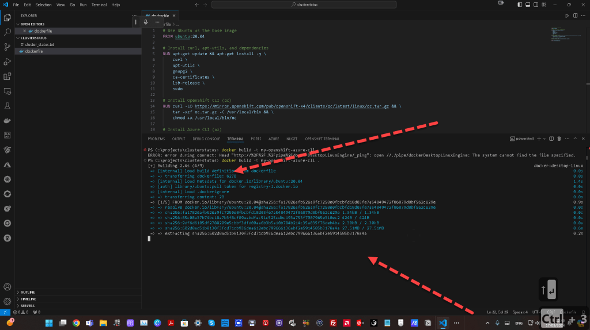
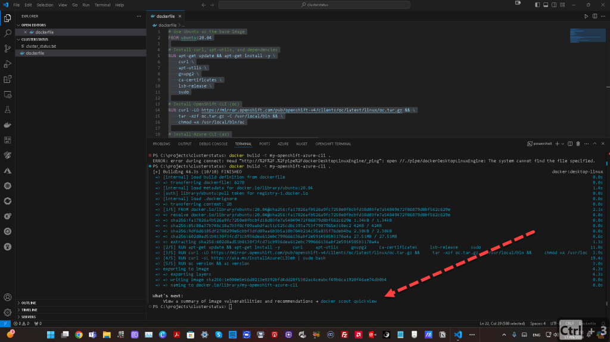
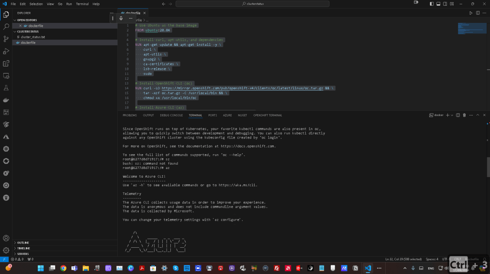
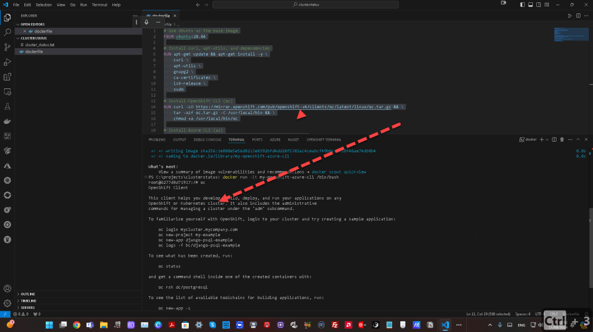

🚀 Creating a Custom Container with OpenShift CLI and Azure CLI for OpenShift CRC
In this blog post, I’ll guide you through how to create a custom container that includes both the OpenShift CLI (oc) and the Azure CLI (az), which can be used within OpenShift CRC (CodeReady Containers). This setup is essential if you want to streamline your development environment by having all the necessary tools in one container.

💡 Why Do You Need This?
If you're working with OpenShift on your local machine using CRC and need to interact with Azure resources (like AKS clusters, storage, or other services), having both the oc and az CLI tools installed in a single container will make your workflow smoother and more efficient. Here's how you can achieve this.
🛠️ Steps to Create the Container
1️⃣ Create a Dockerfile
First, let's define a Dockerfile that installs both OpenShift CLI and Azure CLI. This Dockerfile is based on an Ubuntu image.
Use Ubuntu as the base image
FROM ubuntu:20.04
Install curl, apt-utils, and dependencies
RUN apt-get update && apt-get install -y \
curl \
apt-utils \
gnupg2 \
ca-certificates \
lsb-release \
sudo
Install OpenShift CLI (oc)
RUN curl -LO https://mirror.openshift.com/pub/openshift-v4/clients/oc/latest/linux/oc.tar.gz && \
tar -xzf oc.tar.gz -C /usr/local/bin && \
chmod +x /usr/local/bin/oc
Install Azure CLI (az)
RUN curl -sL https://aka.ms/InstallAzureCLIDeb | sudo bash
Verify installation
RUN oc version && az version
2️⃣ Build the Container




Once your Dockerfile is ready, navigate to the directory where the file is located and build the container image using the following command:
docker build -t my-openshift-azure-cli .

3️⃣ Run the Container

To run the container with both oc and az CLI tools installed, use this command:
docker run -it my-openshift-azure-cli /bin/bash
Now, you'll have a containerized environment where you can use both OpenShift and Azure CLI tools seamlessly.

Here’s a screenshot of the container in action, showing the oc and az CLI tools up and running:

🔄 Next Steps:
- Connect to your OpenShift CRC cluster using the
octool by logging in:
oc login --token=
- Use Azure CLI to authenticate and interact with Azure resources:
az login
🔗 Connect with Me:
Now, you’re all set to work with OpenShift and Azure simultaneously from within your container! Let me know if you have any questions or need further guidance.
Imported from rifaterdemsahin.com · 2025